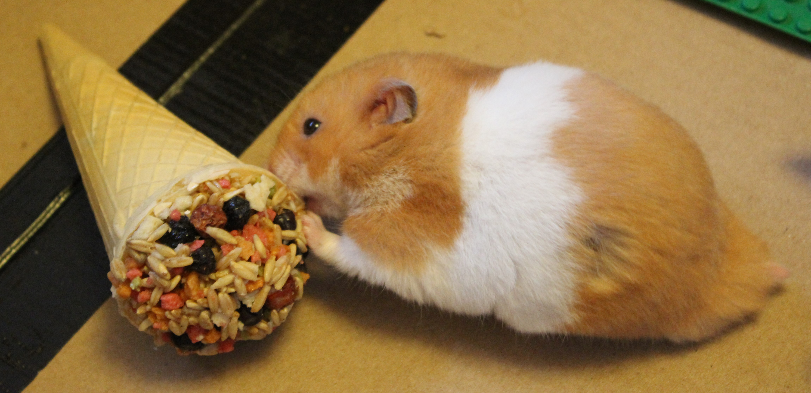
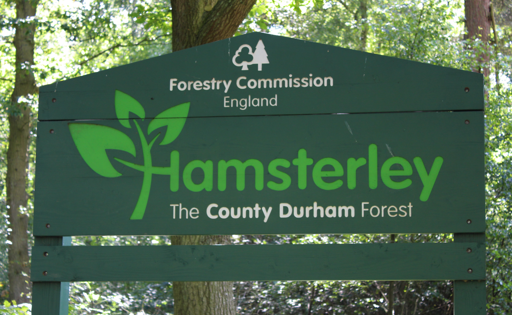
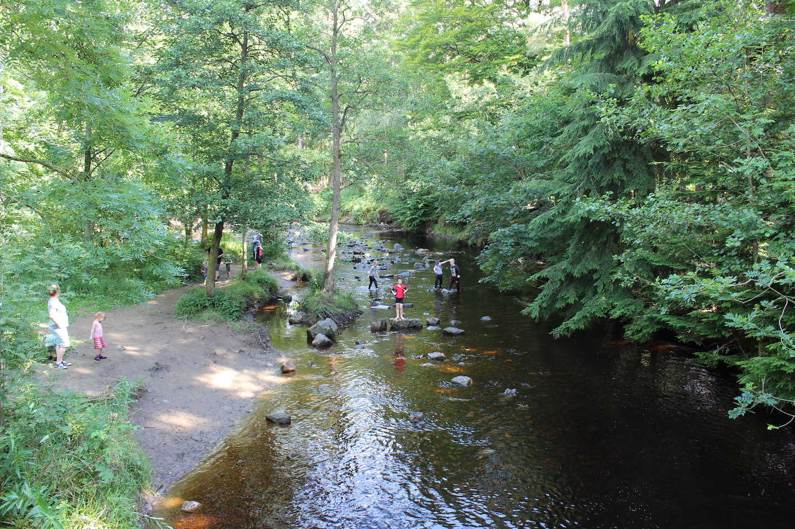
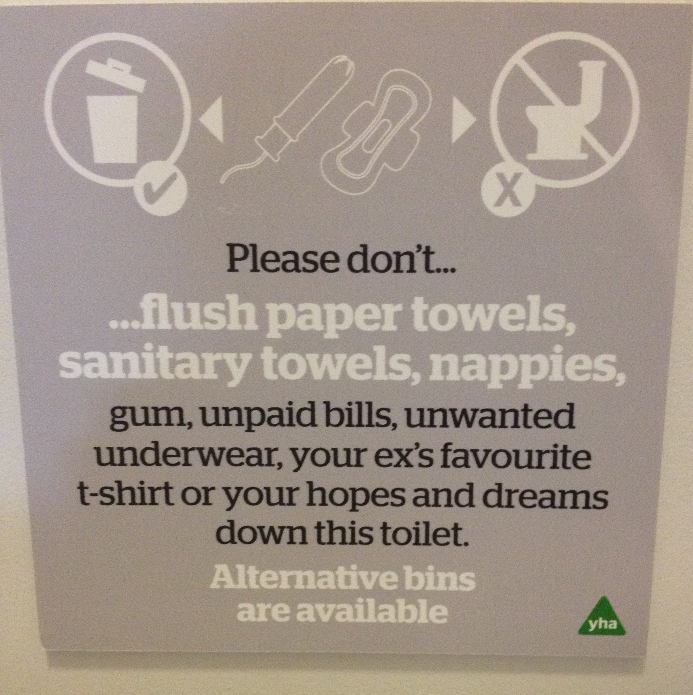
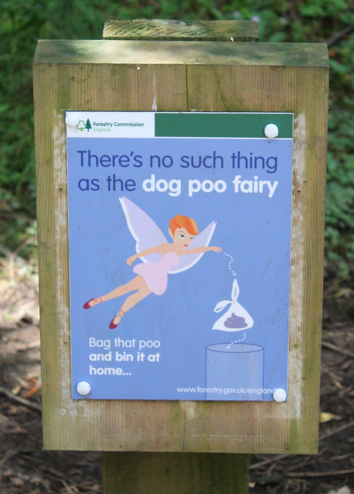

12-Aug-2017 | Milku
And now it's time to rest and wait for an Everton victory.
My travelling humans returned from the North East of England yesterday, full of tales of castles and Roman forts amd more.
Prudhoe Castle was the only Northumberland castle to resist the Scots, but it couldn't resist my humans. They clambered all over it. They enjoyed exploring Barnard Castle and Chesters Roman Fort too. All English Heritage sites, which is unusual for my humans. They usually frequent National Trust places...and they did that too, of course. They stopped at Acorn Bank for lunch on their way to the North East. And roamed Allen Banks and Staward Gorge too. Apparently that was a great place for climbing trees.
But it was Hamsterley Forest that was their favourite place to visit...it had plenty of climbing opportunities too.
I bet you thought such a place didn't exist. There's even a village called Hamsterley...and a Hamsterley Common... but we won't dwell on that as it doesn't sound as upmarket as I'd like.
There were forest trails to explore and lots of play areas. My little humans built a den in the woods and played pooh sticks.
They added to their collection of photos of interesting signs too. The first one here they spotted in the Youth Hostel in Swadlincote. The other was in Hamsterley Forest.
 Hamsterley Forest is unlucky if it doesn't have a poo fairy. There's one here...every so often all the poo in my cage disappears. She also takes my food stash too...unless that's her friend the Food Pilfering Pixie.